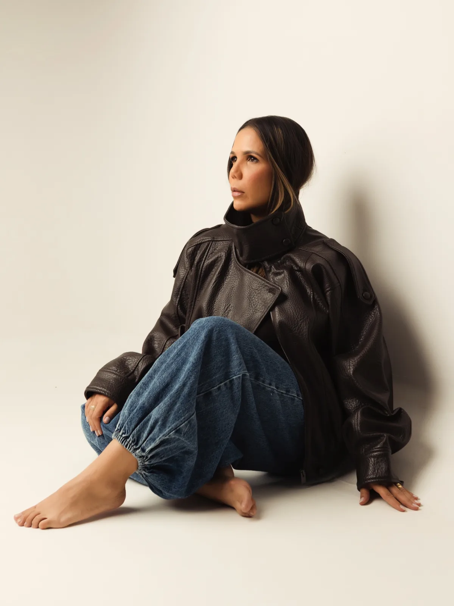
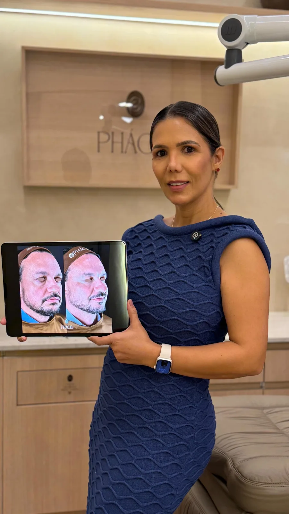
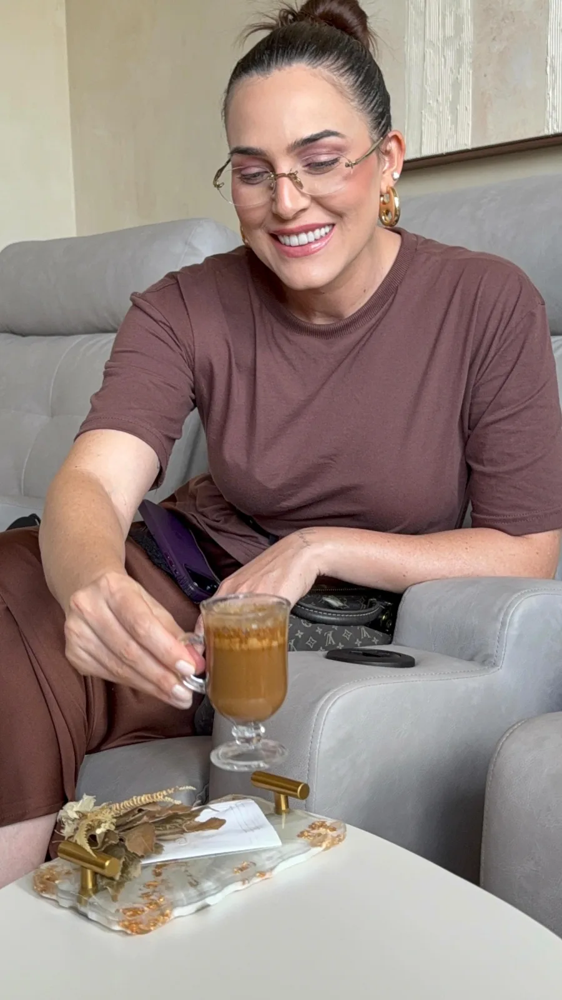
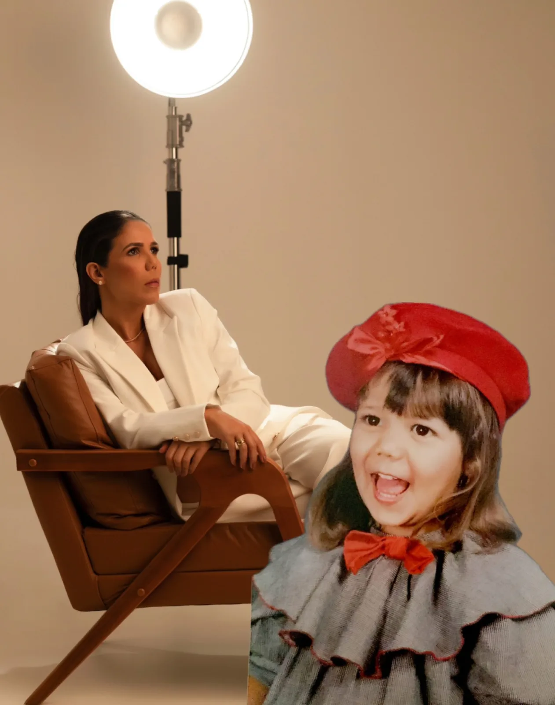

Harmonização Facial
Equilíbrio dos terços do rosto através de preenchedores, toxina botulínica e bioestimuladores, sempre respeitando sua anatomia.
Conhecer →
Dermatologia estética avançada, harmonização facial e tratamentos regenerativos no Boulevard Mall. Cada protocolo é desenhado para realçar a sua identidade, sem padronizações.
A Phácis nasceu com uma ideia simples: ninguém deveria sair de uma clínica parecendo outra pessoa. Cada rosto tem sua geometria, sua história e sua luz, e é a partir dela que desenhamos cada procedimento.
Trabalhamos sobre os pilares do envelhecimento, combinando harmonização, dermatologia regenerativa e terapias capilares em protocolos exclusivos, conduzidos pessoalmente pela Dra. Poliana Freitas.

Cada técnica é executada com produtos certificados, equipamentos de última geração e o acompanhamento clínico que diferencia uma estética séria de uma tendência passageira.
Equilíbrio dos terços do rosto através de preenchedores, toxina botulínica e bioestimuladores, sempre respeitando sua anatomia.
Conhecer →Refinamento do nariz sem cirurgia, com ácido hialurônico de alta densidade. Resultado natural em consultório, sem afastamento.
Conhecer →Definição do contorno da mandíbula com ácido desoxicólico ou enzima lipolítica. Remodela sem cirurgia, com resultado progressivo.
Conhecer →Estímulo profundo à produção natural de colágeno e elastina, devolvendo firmeza e sustentação à pele do rosto, pescoço e mãos.
Conhecer →Protocolo proprietário da Phácis para rejuvenescimento, manchas, melasma e textura, combinando lasers de última geração.
Conhecer →Tratamento da calvície e queda capilar com microagulhamento, plasma rico em plaquetas e medicina regenerativa avançada.
Conhecer →Resultados publicados com autorização das pacientes. Cada caso é único, mas todos compartilham o mesmo cuidado técnico e o tempo necessário para acompanhar o processo.
Refinamento da ponta nasal e correção sutil do dorso em sessão única. Resultado natural, mantendo todos os traços de identidade da paciente.
Clique nas miniaturas para alternar entre os casos.

Da chegada ao café especial, da consulta sem pressa ao retorno cuidadoso, cada detalhe é desenhado para que sua visita seja tão prazerosa quanto o resultado.
Atendimento exclusivo, agenda controlada e ambiente que combina luz natural, materiais minerais e curadoria sensorial. Você é a única pessoa em pauta enquanto está aqui.
Materiais minerais, iluminação calibrada e curadoria sensorial em cada ambiente. Uma clínica desenhada para acolher o tempo da pele e o tempo de quem está aqui.
11.webp)

Médica e fundadora da Phácis Clinic, atende pessoalmente cada paciente em consultas avaliativas, planejamento e procedimentos.
Especialista em harmonização orofacial, dermatologia estética e medicina regenerativa, com mais de uma década dedicada ao estudo da face e do envelhecimento. É referência regional em rinomodelação e protocolos combinados.
O luxo, para mim, é o tempo. Tempo para escutar a paciente, tempo para planejar e tempo para a pele responder no ritmo dela.
Atendemos no coração da cidade, no Boulevard Mall, sala 20. Estacionamento amplo, acesso por elevador e privacidade garantida.